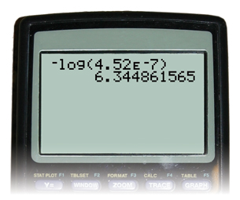
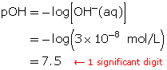
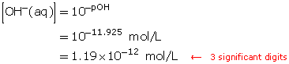

Module 5—Acids and Bases
 Read
Read
Calculating pOH
Read “pOH and Hydroxide Ion Concentration” on page 243 in your textbook. To practice calculations involving hydroxide-ion concentration and pOH, attempt Communication examples 3 and 4 on page 243.
Example 5
Calculate the pOH of a solution that has a hydroxide-ion concentration of 4.52 × 10−7 mol/L.


Example 6
A solution has a pOH of 0.81. Determine the hydroxide-ion concentration.


 Self-Check
Self-Check
SC 5. Calculate the pOH of a solution that has a hydroxide-ion concentration of 3 × 10−8 mol/L.
SC 6. A solution has a pOH of 11.925. Determine the hydroxide-ion concentration.
SC 7. A solution has a pOH of 13.0. Describe the empirical properties of this solution.
Self-Check Answers
SC 5.


SC 6.


SC 7. A solution with a pOH of 13.0 will be very acidic in nature. If a pOH of 1.0 is very basic, the other end of the scale will be acidic. The properties will be consistent with those of an acidic solution—sour taste, reacts with metals, and turns blue litmus red.
 Module 5: Lesson 2 Assignment
Module 5: Lesson 2 Assignment
To complete your assignment as an online quiz, click on Module 5 Lesson 2 Assignment in the "Quizzes".
To complete your assignment as an MSWord document, click Module 5 Assignment 2.